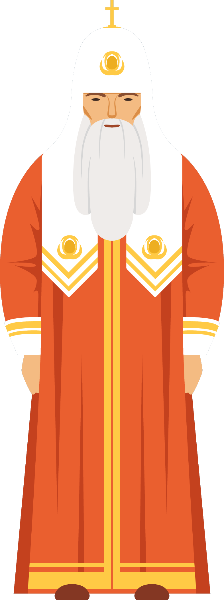

The 20-year-old Alexei (or Alyosha) wields an uncanny warmth over his fractious family members, despite appearing to be the most otherworldly in his mindset. A novice at the local monastery, Alexei is bound by love and piety to the ailing Father Zossima, who loves him in turn and who decides upon the young man's vocation. The Father's decision is influenced, in part, by Alexei's friendship with the young invalid Lise, who regards Alexei as the brother that she never had. As Alexei moves between the monastery and homes such as Lise's, he encounters the boy Ilyusha, who also proves to be of consequence for Alexei's foray into the open world.

The 65-year-old elder Zossima is drawn to Alexei, by some spiritual resemblance to a brother that the aged man loved and lost. Now approaching death himself, the venerated Father recalls his past life in the military and then monastery with great affection. While his path in life moved from outward agitation towards contemplation, he envisions a converse journey - "a long pilgrimage", with great sorrow, labour and love - for the introverted Alexei.
Having grown up with Alexei as a playmate and tutor in Moscow, the bed-ridden Lise nurses a deep affection for the monk-to-be and frequently demands for his atttention. Being both expressive and yet self-effacing, Lise is often caught between her desires and a sense of inarticulate guilt or shame. As events take a dark turn around her, however, Lise channels her sense of being a burden into a harmful combination of self-flagellation and supposed contempt for others.
Nine-year-old Ilyusha grows feverish over a dishonour brought upon his father by Dmitri; so he vows to challenge the captain to a duel, when he grows up. Originally antagonistic towards all of the Karamazov brothers, Ilyusha eventually acquiesces to the loving presence of Alexei, who seeks the welfare of Ilyusha's impoverished family. The little boy's loss of innocence and suffering is a critical aspect of the story, humanising some of Ivan's questions on theodicy.